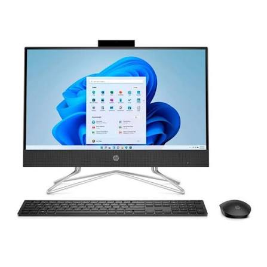

Imagen del Dispositivo

Descripción
Una computadora All in One es un equipo que integra todos los componentes en una sola unidad, incluyendo la pantalla, la CPU y otros periféricos. En el contexto de la nube, estas computadoras ofrecen una experiencia de usuario simplificada y eficiente, permitiendo a los usuarios acceder a aplicaciones web, almacenar datos en servidores remotos y realizar tareas de manera colaborativa sin la necesidad de hardware adicional.